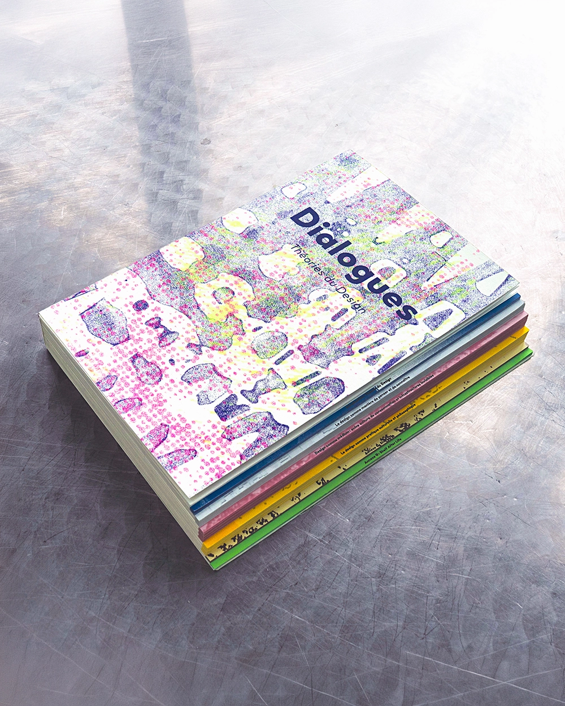
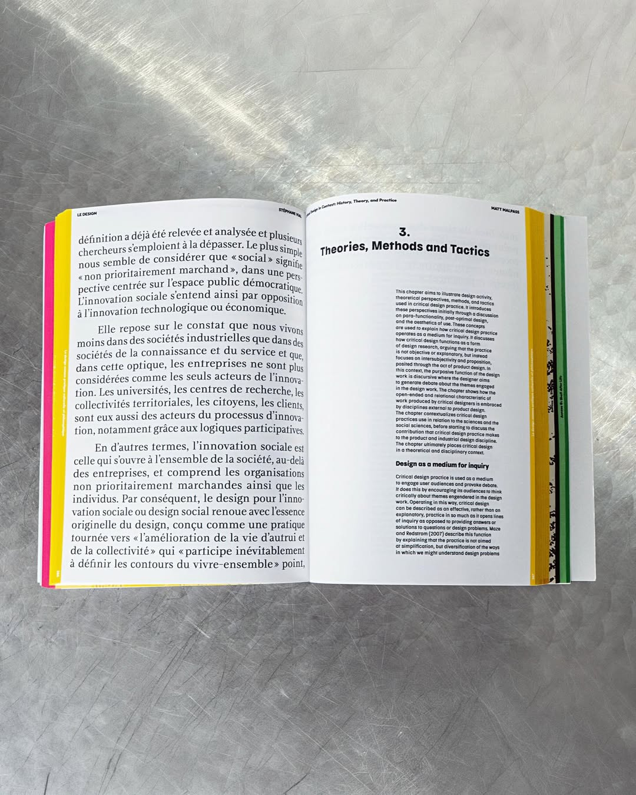
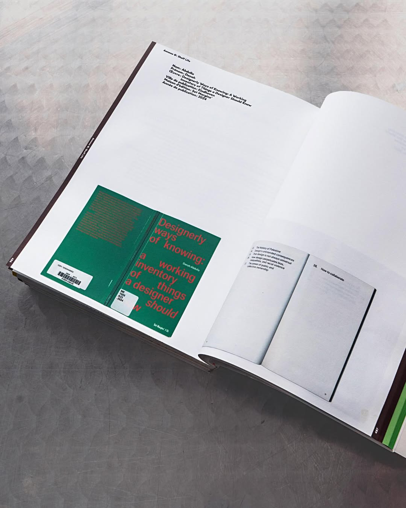
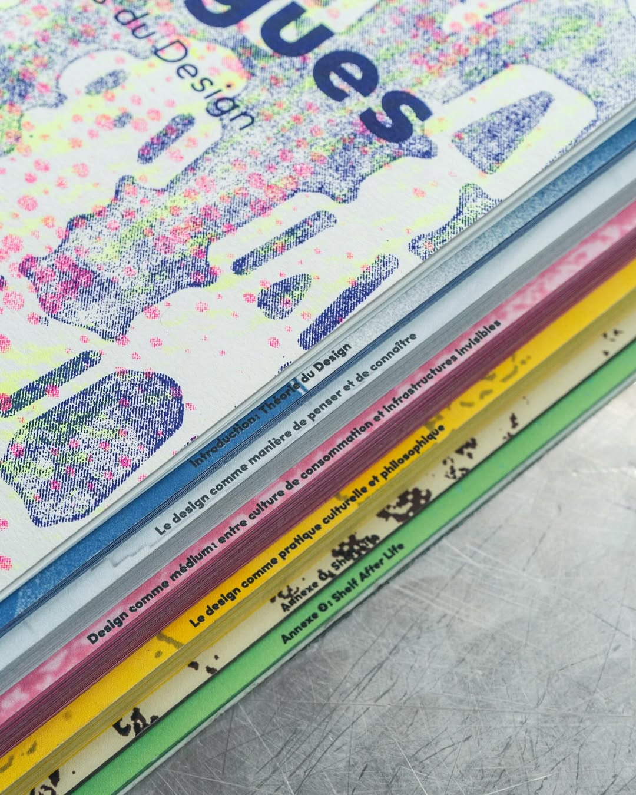
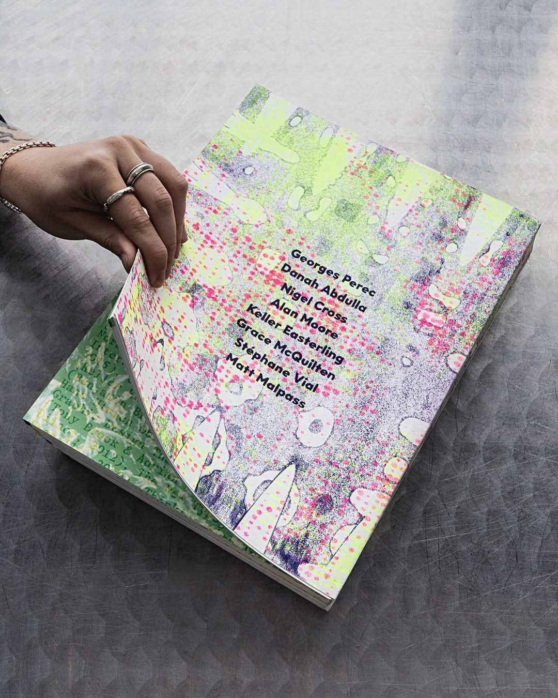

Dialogues, created with Alicia
Melançon, stems from exploring
Shelf #8 of the UQAM Arts Library,
a curated collection of design
theory books. Together, we
balanced compelling typography
with immersive layouts, using
different grid systems and
typesets to place dichotomous
texts in dialogue across spreads.
The project involved extensive
research and content curation
to foster a narrative flow where
ideas converse and clash, while
also questioning the shelf's lack of
BIPOC perspectives by proposing
contemporary, critical, and diverse
voices. This work merges concept
and form, delivering a meaningful
printed experience.





Sources
Perec, G. (1985). Penser/Classer.
Abdulla, D. (2022). Designerly Ways of Knowing.
Cross, N. (2011). Design Thinking: Understanding How Designers Think and Work.
Moore, A. (2016). Do Design: Why Beauty Is Key to Everything.
Easterling, K. (2021). Medium Design: Knowing How to Work on the World.
McQuilten, G. (2017). Art in Consumer Culture.
Vial, S. (2014). Le design.
Malpass, M. (2017). Critical Design in Context: History, Theory, and Practices.